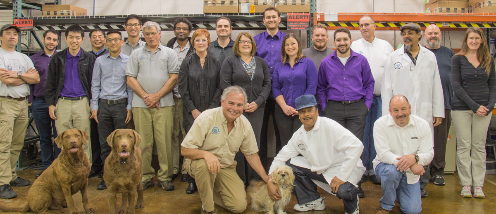

Careers at DST Controls
DST is a great place to work. Enjoy a relaxing, dog friendly, environment where everyone is a team player and works together to deliver continuous customer satisfaction. Our four promises to each person that entrust DST with their career is:
- Competitive Compensation
- Doing Interesting Work
- Working with Great People
- Building Skills for the Future
Every day we all work towards a common goal with purpose. We feel that working at DST is not just a job, but something more meaningful. We understand that each person is critical to our success as a whole and strive to support, challenge, and have fun with our jobs each day.
Whether you have been in the workforce for many years or are looking for your first job; we have something to offer. At DST you will be encouraged to reach your full potential and provided a path to move your career forward in a significant way.
We work in many industries and have a wide breadth of competencies with-in our team. This ranges from manufacturing and electrical design, control system design and programming, and software and database programming.
Below are our open positions for the right person to fill immediately. We welcome a chance to talk with you and see if DST is the place for moving your career forward in a real way!
Please submit your resume with a cover letter to info@dstcontrols.com
Industrial Data – Project Engineer – Entry Level
-
Education
Four year degree in Engineering or Computer Science or equivalent work experience
-
Work Experience
Internship or project work while attending college. If non-degree, 2 years’ experience as a software developer or database administrator.
-
Description
Work with customers to develop and implement data and information systems that collect, store, transfer, and display information from a manufacturing or control system. For example, collecting sensor information from a batch process, storing this information in a database, transferring the data to a manufacturing execution system, and displaying this information in a real-time operational dashboard. The overall purpose of these information systems is to improve operational and business decision to bring lasting value to the companies we work with.
Daily tasks include installing and configuring software packages, such as OSIsoft PI, or Rockwell Software such as FT Historian and VantagePoint. Adding additional functionality to existing information systems, working with clients and DST Senior Level Project Engineers on developing off-the-shelf and custom solutions. Developing custom solutions in C# and/or web-based.
-
Core Skills
- Strong computer skills and competency in Microsoft Windows OS, Excel, Word
- Courses or programming experience with an object oriented language
- Courses or experience with databases
- Basic knowledge of computer networking
-
Additional Skills
- Courses or experience in electrical engineering
- Working knowledge of C# and/or JavaScript
- Experience with Microsoft SQL Server
- Experience with OSIsoft PI or Rockwell Software Products
Industrial Data – Project Engineer – Mid to Senior Level
-
Education
Four year degree in Engineering or Computer Science or equivalent work experience
-
Work Experience
2+ years’ experience with manufacturing or industrial information and controls systems
-
Description
Work with customers to develop and implement data and information systems that collect, store, transfer, and display information from a manufacturing or control system. For example, collecting sensor information from a batch process, storing this information in a database, transferring the data to a manufacturing execution system, and displaying this information in a real-time operational dashboard. The overall purpose of these information systems is to improve operational and business decision to bring lasting value to the companies we work with.
Daily tasks include installing and configuring software packages, such as OSIsoft PI, or Rockwell Software such as FT Historian and VantagePoint. Adding additional functionality to existing information systems, working with clients on developing off-the-shelf and custom solutions. Developing custom solutions in C# and/or web-based. Additionally, as a mid to senior level Project Engineer, you will mentor, manage, and train entry level engineers.
-
Core Skills
- Fluent in programming C# and/or JavaScript
- Strong Experience with Microsoft SQL Server
- Strong computer skills and competency in Microsoft Windows OS, Excel, Word
-
Additional Skills
- Experience with PLC and SCADA programming
- Experience with SSRS and SharePoint
- Experience with OSIsoft PI or Rockwell Software Products
- Experience with Ethernet networking devices, such as routers, switches, and NIC